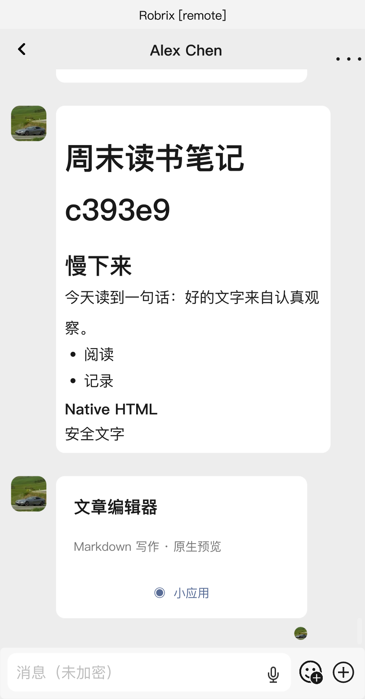
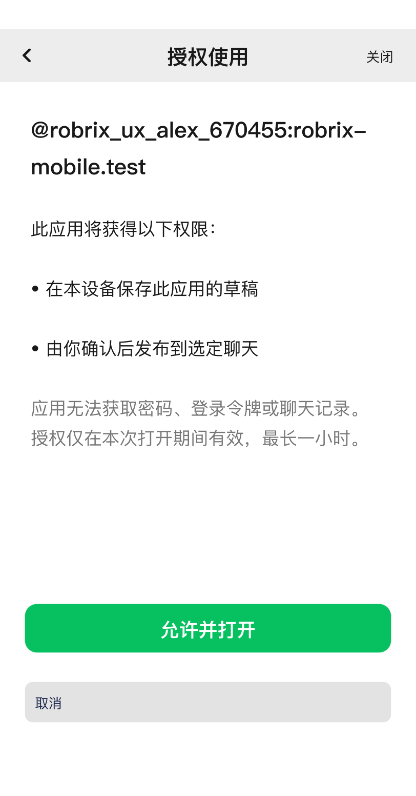
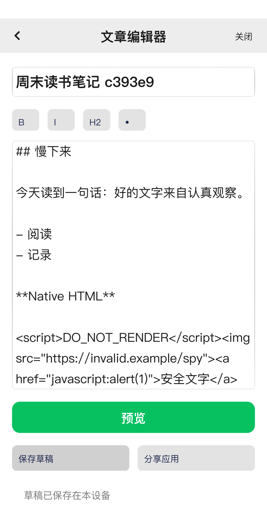
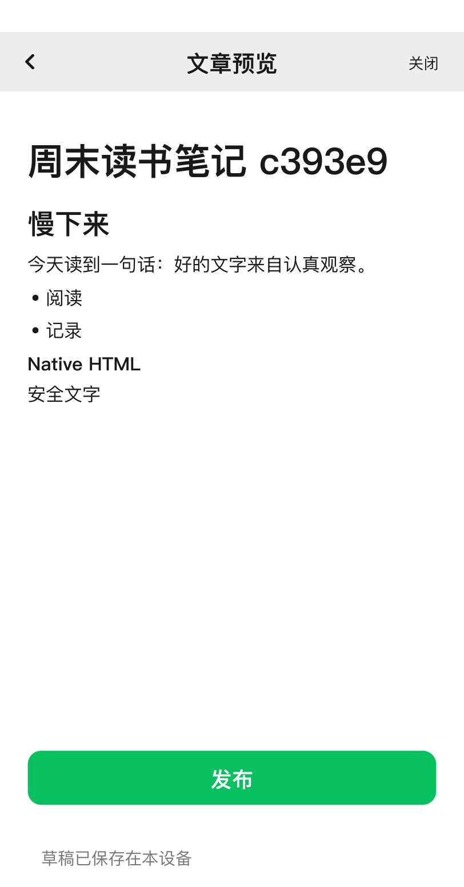
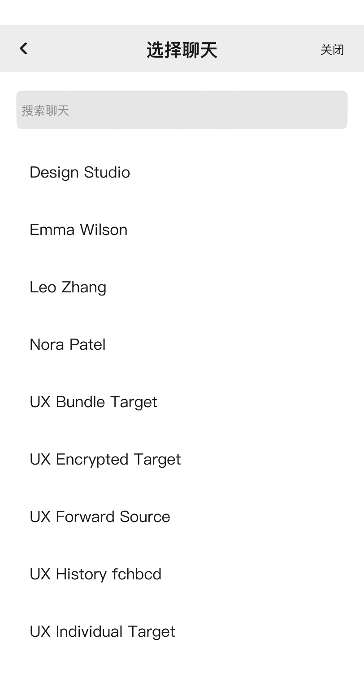
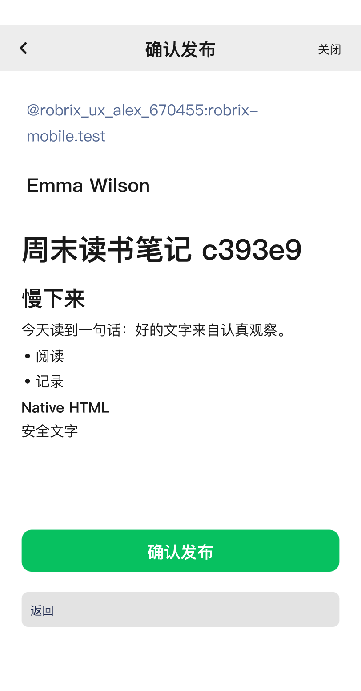
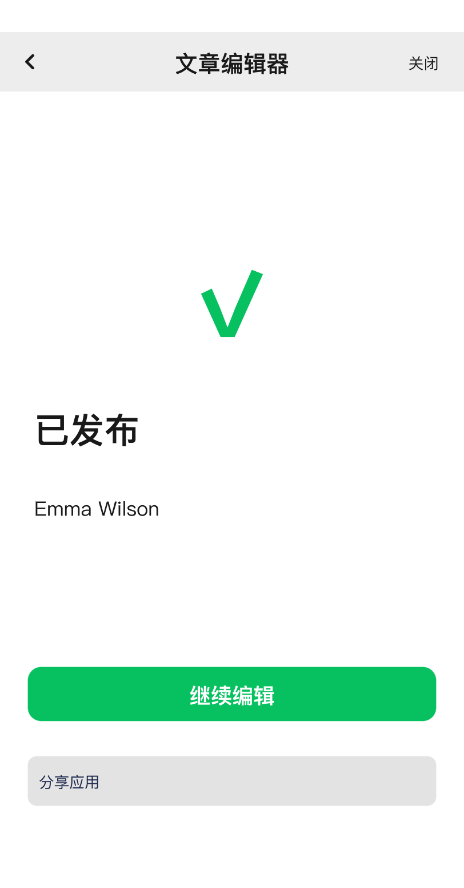

received-card

Eight generated reference states compared with real native Makepad captures. Behavior passed on two isolated Palpo accounts. This page does not award a similarity score or 9/10 visual acceptance. Test titles include a unique suffix and adversarial Markdown; identities are test-only.






